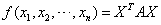
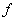
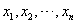
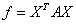
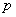
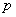

6.2 正定二次型和正定矩阵
一、实二次型的分类
| 对于任一个n元实二次型，作为一个n元二次齐次多项式，我们往往需要考虑它的取值问题，显然当时，二次型的值为，下面我们根据当取不全为零的n个数时，即当X为任一个非零列向量时，取值的不同情况，给出以下定义：
|
|
例1：以n=3为例 （1）正定二次型：，对应矩阵； （2）半正定二次型：，对应矩阵； （3）负定二次型：，对应矩阵； （4）半负定二次型：，对应矩阵 （5）不定二次型：，对应矩阵 注意：（1）要讨论矩阵的正定性，该矩阵必须是实对称矩阵，二次型的正定性与实对称矩阵的正定性是紧密相连的。 （2）定义中要求X是任何非零向量，是指X的分量不全为零，即至少有一个分量不为零，而不是指所有分量全不为零的向量，因此如果仅对所有分量都不为零的向量X有，也不能说 （3）二次型“正定”的含意就是指在任何非零向量X条件下，二次型的值一定是正的。 本课程中，只讨论正定二次型和正定矩阵，其它的统称为非正定二次型和非正定矩阵。 |
二、正定矩阵
|
首先介绍四个关于正定矩阵的定理：
证：设 充分性：如果所有，那么对任何非零列向量，显然有，则为正定矩阵。 必要性：设为正定矩阵，即对任何非零列向量X都有。 于是对任意取定的取，其它未知量全取零，则 证毕。 |
证：对任意取定的，取第i个标准单位向量 由A的正定性必有： 证毕 例2：问是不是正定二次型？ 解： 的矩阵  ，A中元素，所以为非正定二次型。 ，A中元素，所以为非正定二次型。 |
证：由A与B合同，即存在可逆矩阵P，使 如果A为正定矩阵，那么对于任何，也有，则这说明B正定。 反之，当B为正定矩阵时，由合同关系的对称性，A也是B的合同矩阵，则A也是正定矩阵。证毕 这个定理可以简述为：“正定矩阵的合同矩阵一定也是正定矩阵”或改用二次型语言：即二次型的正定性经可逆线性变换保持不变。
证：设A，B是两个同阶正定矩阵， 首先仍为实对称矩阵，对任何必有所以为正定矩阵。 证毕 注：这里 |
|
对于给定的对称矩阵，如何判定它的正定性？
证：由A为n阶实对称矩阵，故存在正交矩阵P，使，说明A与对角矩阵合同。 则A正定 证毕。 推论（1）n阶对称矩阵A是正定矩阵 （2）n阶对称矩阵A是正定矩阵 （3）任意两个同阶正定矩阵必是合同矩阵。 证：（1）因为A的正惯性指数就是A的正特征值的个数。 所以A正定 （2）由对称矩阵的惯性定理，对任意一个n阶对称矩阵A，它一定合同于对角矩阵  ，这里为A的正惯性指数。 ，这里为A的正惯性指数。由A正定 （3）设A和B都是n阶正定矩阵，则A与B都合同于n阶单位矩阵，则由合同关系的传递性，说明A和B都是合同矩阵。 |
|
在例3的证明过程中，已知正定矩阵A的行列式，前面我们也证明了正定矩阵的对角元全是正的，而这些都只是正定矩阵的必要条件，或者说，仅有对角元全大于零及还不能保证A为正定矩阵，还需加强条件，下面我们来计论相关问题，引入概念：
显然一阶顺序主子式为，n阶顺序主子式为 |
|
|
例4：判定是不是正定矩阵？ 解：A为实对称矩阵 所在，A是正定矩阵。 例5：问是不是正定二次型？ 解： 的矩阵，显然2阶顺序子式为 所以不是正定二次型。 |
|
例6：问 （1） （2） 解：（1）的矩阵是对角矩阵。 而A正定当且仅当全大于零，所以时，是正定二次型。 （2）的矩阵 
因 而 所以正定 |
请认真答题，测试一下你对前面知识点的学习情况！
(单选题) 25．若实对称矩阵为正定矩阵，则a的取值应满足（ ）.
【答案】 B
【解析】
【知识点】正定矩阵